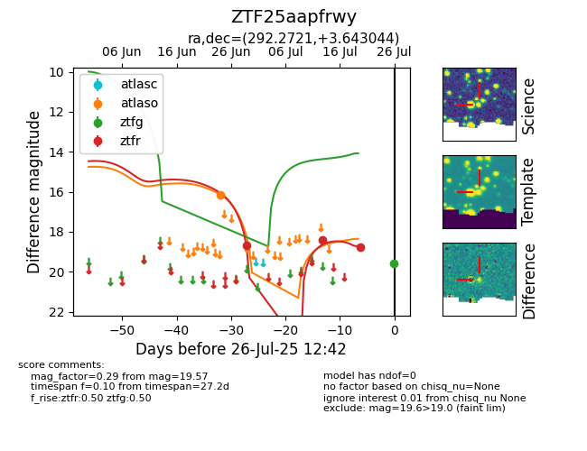

Target ZTF25aapfrwy at 2025-07-26 12:42, see:
FINK: fink-portal.org/ZTF25aapfrwy
Lasair: lasair-ztf.lsst.ac.uk/objects/ZTF25aapfrwy
ALeRCE: alerce.online/object/ZTF25aapfrwy
alt names
ZTF25aapfrwy (ztf,fink)
coordinates:
equatorial (ra, dec) = (292.2721,+3.64304)
galactic (l, b) = (40.5094,-6.67769)
photometry
last atlaso=16.13, ztfg=19.57, ztfr=18.77
1 atlaso, 1 ztfg, 3 ztfr detections
